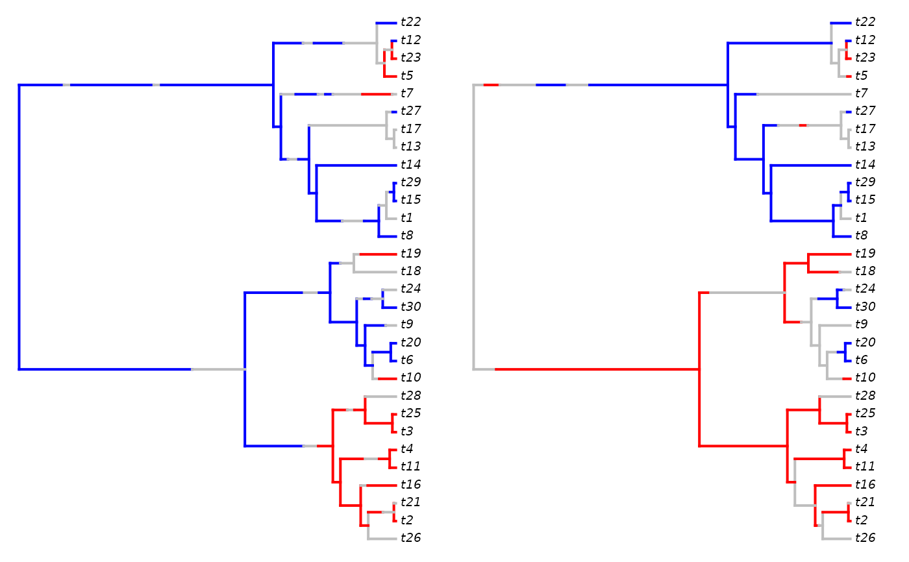

Toy list of contMaps: stochastic histories of a continuous trait
Source:R/dataset_doc.R
toy_contMaps.RdList of 10 contMaps of phylograftR::toy_backbone, each describing one possible history of the continuous
trait of phylograftR::toy_tip_values (continuous stochastic maps).
Providing several histories accounts for the uncertainty of the reconstruction of the ancestral trait values, unlike phylograftR::toy_contMap.
It is the type of input that you need to constrain the grafting with a continuous trait while accounting for the uncertainty:
the first step is to discretize the list into a multiSimmap with phylograftR::convert_contMap_to_simmap()
(see the examples), and to provide it as simmap to the grafting functions.
It was built with the script of the example of phylograftR::convert_contMap_to_simmap():
100 continuous stochastic maps were simulated with
contsimmap::make.contsimmap(), conditioned on the tip values, the backbone and a Brownian Motion with the evolutionary rate estimated byphytools::anc.ML()(seed 1234).They were converted into a list of
contMaps withdeepSTRAPP::convert_contsimmap_to_contMaps().Only the first 10 maps were kept, to keep the package light. 10 maps are enough for illustration, but actual analyses should use more maps (100 or more).
The script uses contsimmap directly, to credit the authors of the continuous stochastic mapping approach.
For your own data, deepSTRAPP::prepare_trait_data() is recommended: with run_stochastic_maps = TRUE, it fits the evolutionary model(s), runs the continuous stochastic mapping
and converts the maps into a list of contMaps in a single call, with additional options to fine-tune the process.
It can also output directly both the interpolated point estimate as in phytools::contMap(),
and the set of stochastic continuous maps simulated with contsimmap::make.contsimmap().
Once discretized, these maps are a constraint for the grafting. They are not stochastic maps of a discrete trait:
the number of transitions between states depends on the cut points, on the resolution of the continuous maps and on min_segment_proportion,
and must not be used to compute transition rates or counts.
Usage
data(toy_contMaps)Format
A list of 10 objects of class "contMap" (see phytools::contMap()), each with the elements:
$tree: the backbone as a"simmap", in which the states are the color levels of the trait values from 0 to 1000.$cols: the color palette across values discretized from 0 to 1000.$lims: the range of the trait values of the map, which differs among the maps. The topology and branch lengths of the trees are the same asphylograftR::toy_backbone.
See also
Other datasets and functions from phylograftR:
phylograftR::toy_tip_valuesandphylograftR::toy_contMapfor the data used and the point estimate of the trait history.phylograftR::convert_contMap_to_simmap()to discretize contMaps into simmaps.phylograftR::convert_values_to_states()to convert the continuous values of the missing taxa into the states of these maps.phylograftR::graft_missing_taxa()to graft taxa with the maps as constraints: each map is used for a different simulation.
Examples
# Import the data
data(toy_contMaps)
data(toy_tip_values)
length(toy_contMaps)
#> [1] 10
# Discretize the list of contMaps into a multiSimmap of three states,
# using the terciles of the observed tip values as cut points
my_multiSimmap <- convert_contMap_to_simmap(toy_contMaps, probs = c(1/3, 2/3),
states = c("low", "medium", "high"),
tip_values = toy_tip_values, verbose = FALSE)
# Cut points and states used for the discretization
attr(my_multiSimmap, "breaks")
#> [1] -0.06642759 1.49246937
attr(my_multiSimmap, "states")
#> [1] "low" "medium" "high"
# Plot the first two maps: two possible histories of the same trait
par(mfrow = c(1, 2))
state_colors <- c(low = "blue", medium = "grey", high = "red")
plot(my_multiSimmap[[1]], colors = state_colors, fsize = 0.6, ftype = "i")
plot(my_multiSimmap[[2]], colors = state_colors, fsize = 0.6, ftype = "i")

par(mfrow = c(1, 1))